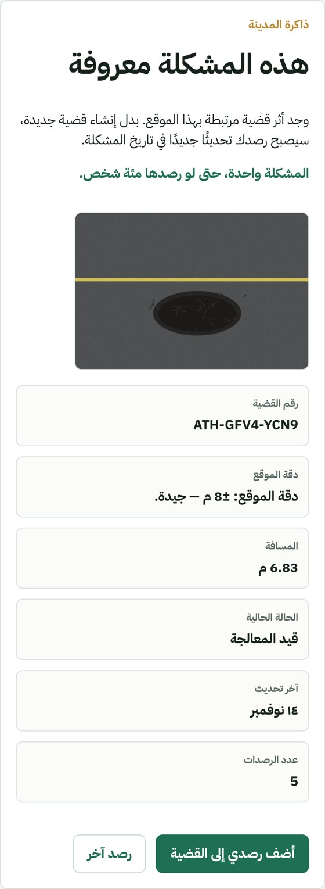
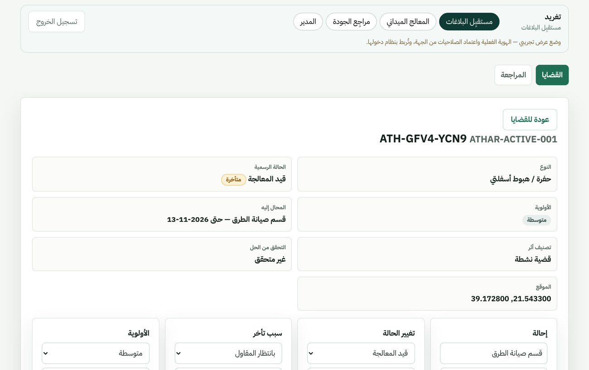

| الحل | وش يسوي | وش ينقصه |
|---|---|---|
| بلدي و940 — المملكة | رقم بلاغ، ورسالة عند الإغلاق، والمؤشر «نسبة الإنجاز» | ما لقينا ربط معلن للبلاغ بتاريخ الموقع، ولا قياس لصمود الإصلاح |
| الراصد المعتمد — وزارة البلديات | مجتمع مدرَّب يرصد المخالفات البلدية عبر بلدي، بمكافأة | يرصد المخالفة؛ ما يتابع هل الإصلاح صمد بعد الإغلاق |
| FixMyStreet — بريطانيا | يقترح البلاغات المفتوحة القريبة، ويسأل المبلّغ بعد 4 أسابيع: انصلحت؟ | يقارن بالمفتوح بس؛ رجوع المشكلة بعد الإغلاق = بلاغ جديد |
| SeeClickFix — أمريكا | دمج البلاغات المكررة في سجل قضية واحد، والمواطن يعيد فتح المغلق | يُؤرشف بعد 7 أيام من الإغلاق |
| 12345 — بكين | تحليل ضخم للشكاوى، وفرق تعالج قبل البلاغ | يحتاج منظومة وفرق بحجم مدينة كبرى |
| vialytics — ألمانيا My City Report — اليابان | كاميرات مركبات وذكاء اصطناعي يكشف تلف الطرق | للطرق بس، ويحتاج مركبات وأجهزة |


| الآيباد | نقرة في أي مكان = التالي · نقرة على الحافة اليمنى = رجوع · سحب لليمين = التالي · سحب لليسار = رجوع · ☰ = القائمة |
| → ↓ PageDown مسافة N Enter، نقرة يسار | التالي |
| ← ↑ PageUp Backspace، نقرة يمين | رجوع |
| F أو F5 | ملء الشاشة |
| B أو . | شاشة سوداء · W أو , شاشة بيضاء |
| P | عرض المقدّمة (الملاحظات والمؤقت) |
| G أو O | نظرة عامة |
| رقم ثم Enter | انتقال للصفحة |
| Home / End | أول / آخر نقرة |
| D · L | فاحص المفاتيح · خط التقدم |
| H أو ? · Esc | المساعدة · إغلاق |